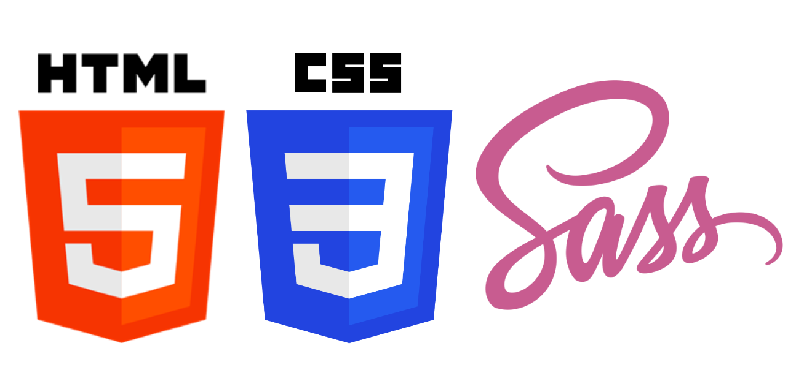
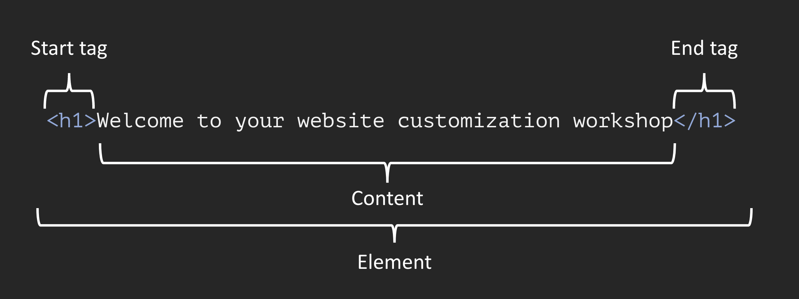

If you first need to get your website up and running, follow along with these step-by-step instructions before moving forward.
So you’ve created your personal website using Quarto…
Quarto gives us with an easy-to-use web publishing format to create our personal websites – we can develop in a space that is comfortable (for me, that’s RStudio) and write mostly Markdown syntax (which is rendered as HTML when we build our website). A massive benefit is that these websites already look pretty slick right out of the box.
An example Quarto website with default styling using the built-in Bootswatch theme, Cosmo
But some additional modifications can make your website stand out from the rest
Enter HTML, CSS and Sass
In order to make those changes, we need to dive a bit into the world of HTML, CSS and Sass.

Some of you may have already heard of/written HTML and/or CSS and/or Sass – that’s great! We’re going to spend a few minutes first learning about what makes a web page…look like a web page, then apply what we learn to our own Quarto sites.
HTML & CSS are the building blocks of web pages
HTML (Hypertext Markup Language) is a markup language1 that tells web browsers how to structure web pages. You can think of HTML as the skeleton of a web page. It gives authors the means to create elements like headings, text, tables, lists, add media, etc.
1Markdown and R Markdown are both lightweight markup languages – they’re a bit easier for humans to write and read than HTML. HTML is more expressive and allows for customization that is difficult or impossible to do in Markdown.
HTML & CSS are the building blocks of web pages
CSS (Cascading Style Sheets) is a programming language that allows you to control how HTML elements look on a web page. You can think of CSS as the outfit that is styling the skeleton. It allows authors to control aspects such as the colors, layout, and font style.
Your browser has its own internal style sheet to render HTML
Your browser will style HTML documents using an internal style sheet, which ensures that headings are larger than normal text, links are highlighted, lists and tables are structured correctly, etc.
HTML
Browser default styling
CSS adds pizzazz to web page renderings
CSS allows website developers to add additional styling to web browser defaults. Otherwise, websites would be pretty boring to look at (and they’d all generally look the same).
Browser default styling
CSS styling
A light introduction to HTML
HTML elements
HTML consists of a series of elements comprising start tags and end tags that render some form of content in a particular way.
The basic anatomy of an HTML element:

In Markdown syntax, this HTML element would be written as: # Welcome to your website customization workshop
Note: Some HTML elements have no content (e.g. the <br>, or “break” element) – these are called empty elements and do not have an end tag.
an inline container used to markup part of a text or document
HTML nested elements
You can also nest elements. Remember to close out tags from the inside-out to avoid unexpected renderings.
Nested HTML elements:
In Markdown syntax, this HTML element would be written as: # Welcome to your **website customization** workshop
Important: Take extra care to never skip an end tag! Some elements will still display correctly if you forget an end tag, but you cannot rely on this. Forgotten end tags will cause you headaches as you try troubleshoot unexpected results and errors .
HTML attributes
HTML elements can also have attributes which provide extra information about elements. They are always specified in the start tag and usually come in value/name pairs (e.g. attributeName="attributeValue").
Attributes can be used in many powerful ways – one way is to provide a class or ID as an identifier to be used for targeted styling with CSS. We’ll come back to this concept soon.
The basic anatomy of an HTML attribute:
Practice writing some HTML
Exercise: practice writing HTML (1/2)
You can use any text editor to do so (RStudio an VS Code work too!). The following steps assume you’re working in RStudio. Later, we’ll link an external (separate) CSS style sheet within our HTML file, to style our elements.
Open an RProject (an existing one is fine). In your terminal window, use the touch command to create an html file (for simplicity, I did this in my project’s root directory), then choose Open in Editor.
touch practice-html.html
Create the skeleton of your HTML file.
<!DOCTYPE html><!-- All HTML docs start with a doc type declaration--><html><!-- This tag represents the root of the HTML doc --><head><!-- Write any metadata about the HTML doc here (inluding the link to an external CSS file) --></head><body><!-- Write all the contents of the HTML doc here --></body></html>
Exercise: practice writing HTML (2/2)
Write some HTML! We’ll practice styling our HTML in the next section.
Create a level one header, a paragraph, and a button that takes you to the MEDS website (here’s one good resource on how to do that) within the <body> of your html file.
<!DOCTYPE html><!-- All HTML docs start with a doc type declaration--><html><!-- This tag represents the root of the HTML doc --><head><!-- Write any metadata about the HTML doc here (inluding the link to an external CSS file) --></head><body><!-- Write all the contents of the HTML doc here --></body></html>
Exercise: practice writing HTML (2/2)
Write some HTML! We’ll practice styling our HTML in the next section.
Create a level one header, a paragraph, and a button that takes you to the MEDS website (here’s one good resource on how to do that).
<!DOCTYPE html><!-- All HTML docs start with a doc type declaration--><html><!-- This tag represents the root of the HTML doc --><head><!-- Write any metadata about the HTML doc here (inluding the link to an external CSS file) --></head><body><!-- Write all the contents of the HTML doc here --><h1>Here is my level one header</h1><p>Here is my first paragraph</p><p>Here is my second paragraph</p><buttontype="button"onclick=window.location.href='https://ucsb-meds.github.io'>Go to MEDS website</button></body></html>
Click on the Preview button at the top of your source pane to see the rendered output.
A light introduction to CSS
CSS is a rule-based language
CSS is a rule-based language, meaning that it allows you to define groups of styles that should be applied to particular elements or groups of elements on a web page. For example, “I want all first-level (<h1>) headings to be green text with a bit of extra space between each letter” could be coded as:
Selectors select the HTML element(s) you want to style (e.g. first-level headings, <h1>)
Declarations sit inside curly brackets, {}, and are made up of property and value pairs. Each pair specifies the property of the HTML element(s) you’re selecting (e.g. the color property of the element <h1>), and a value you’d like to assign to that property (e.g. green)
A property and its corresponding value are separated by a colon, :. Delcaration end with a semicolon, ;
There are a number of different CSS selector types
The next few slides review just a few basic CSS selector types for styling HTML elements – these will get you far in your website customization journey (but you can learn more about all the different categories of CSS selectors here):
Element selectors
Grouping selectors
ID selectors
Class selectors
Universal selector
Inline styling (not a selector type, but an alternative way to apply CSS styling)
Any HTML element can be used as a selector. The declarations specified apply to all HTML elements of that type.
CSS
h1 {color: green;letter-spacing: 5px;}
HTML
<h1>My level one header will be styled</h1><h2>This level two header will not be styled</h2><p>Neither will this paragaph</p><h1>But this second level one header will be</h1>
Output
Rather than defining separate rules for multiple element selectors that you want styled the same way, you can group them together. Simply separate each selector by a comma.
CSS
h1, h2, p {text-align: center;color: purple;}
HTML
<h1>My level one header will be styled</h1><h2>This level two header will be styled</h2><h3>This level three header will not be styled</h3><p>This paragaph will be styled</p>
An ID selector uses the id attribute of an HTML element to style that specific element. IDs must be unique within a page and therefore can only be used to select and style one unique element. ID selectors are written using a pound symbol followed by the selector name, e.g. #selector.
CSS
#para1 {color: red;text-align: center;}
HTML
<pid="para1">My first paragraph is styled</p><p>But my second paragraph is not</p>
Output
An class selector uses the class attribute of an HTML element to style that specific element. Class selectors are written using a period followed by the selector name, e.g. .selector. HTML elements can have more than one class, e.g. <p class="class1 class2">
The universal selector selects all HTML elements on the page. It is written using only an asterisk.
CSS
* {text-align: center;color: orange;}
HTML
<h1>My level one header will be styled</h1><h2>This level two header will be styled</h2><p>This paragaph will also be styled</p>
Output
The style attribute may be used inline to apply unique styles to a single element. It’s best practice to use these sparingly as it mixes content (HTML) with presentation (CSS) and cannot be reused with other elements like defined CSS rules can.
HTML with inline styling
<p>This is a normal paragraph</p><pstyle="color: red; font-style: italic;">This paragraph has inline styling</p><p>Here, only the word <spanstyle="color: red; font-style: italic;">paragraph</span> is styled</p>
Output
Conflicting CSS rules?
It is often the case that more than one CSS rule will point to the same element. For example, say you have a style sheet and HTML that look like the following:
<h1>This is my header</h1><p>This is my paragraph with <spanstyle="green-text">some green text</span></p>
In this case, we have a universal selector that styles all of our text orange, but we also have an element selector that colors our <h1> elements blue and a class selector that is applied inline to color a subset of text green. How do you know which style will be declared and applied to each of our HTML elements?
The highest specificity value “wins”
Specificity can be complicated (especially when you consider all the other types of selectors we haven’t covered in these slides). For the purposes of this workshop and getting started on your CSS journeys, a general rule of thumb is as follows: Inline styles are the most specific and will override ID selectors, which will override class selectors, which will override Element selectors, etc. The order that rules are written in your style sheet matters as well – since rules are read top to bottom, a directly competing rule farther down your style sheet will take precedent.
Practice writing some CSS rules to style your HTML elements
Exercise: practice writing CSS (1/3)
Return to your RProject (where you created your practice-html.html file). In your terminal window, use the touch command to create a CSS file in the same location as your html file:
touch practice-styles.css
Link your CSS file inside the <head> of your HTML file (read more about inserting style sheets here).
<!DOCTYPE html><!-- All HTML docs start with a doc type declaration--><html><!-- This tag represents the root of the HTML doc --><head><!-- Write any metadata about the HTML doc here (inluding the link to an external CSS file) --><linkrel="stylesheet"href="practice-styles.css"></head><body><!-- Write all the contents of the HTML doc here --><h1>Here is my level one header</h1><p>Here is my first paragraph</p><p>Here is my second paragraph</p><buttontype="button"onclick=window.location.href='https://ucsb-meds.github.io'>Go to MEDS website</button></body></html>
Exercise: practice writing CSS (2/3)
Write some CSS selectors in your practice-styles.css file and save. Update your HTML file accordingly to apply your styles and Previewpractice-html.html to see the updates. Some suggestions:
(a) create an <h1> element selector that styles the background color to something of your choosing (hex and rgb codes allowed!) and centers the text on the page,
(b) create a class selector to color the text of your first paragraph blue,
(c) use that same class selector inline to style just the word second (in your second paragraph) blue,
(d) create a class selector to color your button text red and enlarge the font size (try 20px),
(bonus) What happens if you also apply that red/large font selector to your second paragraph?
<!DOCTYPE html><!-- All HTML docs start with a doc type declaration--><html><!-- This tag represents the root of the HTML doc --><head><!-- Write any metadata about the HTML doc here (inluding the link to an external CSS file) --><linkrel="stylesheet"href="practice-styles.css"></head><body><!-- Write all the contents of the HTML doc here --><h1>Here is my level one header</h1><pclass="blue-text">Here is my first paragraph</p><pclass="large-red-text">Here is my <spanclass="blue-text">second</span> paragraph</p><buttontype="button"class="large-red-text"onclick=window.location.href='https://ucsb-meds.github.io'>Go to MEDS website</button></body></html>
Okay, but what about Quarto?
When you create a new Quarto site, it automatically creates a styles.css file
We can start writing our CSS rules here. But where to start…?
before we start writing rules, we can test things out in our browswer first by inspecting our webpage